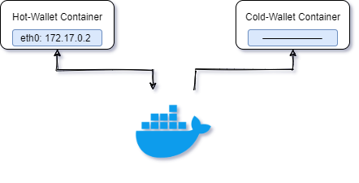

Headless Cold-Staking with Docker¶
This guide utilizes Docker containers to represent separate devices. Two containers are utilized, one that is network attached, and another which has no network configuration, ensuring isolation from other networks and/or the internet.
We would recommend the utilization of an ‘air-gapped’ device for the Cold-Wallet, transferring necessary information with the use of a secure device.
The STRAX-TEST Blockchain Network is utilized throughout this guide; however, the same steps can be followed on the STRAX Blockchain Network by simply amending the request examples.
Important Notice¶
A Docker environment is used to purely emulate an air gapped device and to provide an example of how the process is achieved. We would not recommend nor advise to utilize two local Docker containers for your Cold-Staking.
Cold-Wallet Creation¶
Obtain the latest release instance of the Stratis Full Node docker image by defining the image; in this example we are leveraging the Stratis Full Node 1.0.7.2 Release.
docker pull stratisplatform/stratisfullnode:Stratis.StraxD.TestNet-1.0.7.2
Create a new container with no attached network, ensuring that the container remains isolated.
docker run --network "none" --name "Cold-Wallet" --detach stratisplatform/stratisfullnode:Stratis.StraxD.TestNet-1.0.7.2
The Container ID is returned upon execution of the above command, take note of this as we will reference this later.
94f4d4c7889efe8484c971653d61c4573e51f7f4f61480440b263fe662cea645
Create a new interactive session with the Docker container we’ve just created
docker exec -it 94f4d4c7889efe8484c971653d61c4573e51f7f4f61480440b263fe662cea645 /bin/sh
Utilize the Wallet/create endpoint to create a new wallet
curl 'http://localhost:27103/api/Wallet/create' -H 'accept: application/json' -H 'Content-Type: application/json-patch+json' --data-binary "{\"password\":\"ColdWalletPassword\",\"passphrase\":\"ColdWalletPassphrase\",\"name\":\"STRAX-Cold-Wallet\"}"
This will return 12 mnemonic words. The 12 mnemonic words and defined passphrase form your seed, ensure that these are stored safely and securely.
"horse frequent grief scatter person stool used lesson response pulse swarm level"
The Wallet/unusedaddress endpoint will return an address derived from the newly created wallet. This is the address that will initially hold the STRAX that you intend to cold-stake.
curl 'http://localhost:27103/api/wallet/unusedaddress?walletName=STRAX-Cold-Wallet&accountName=account%200' -H 'Accept: application/json' -H 'Content-Type: application/json'
An address will be returned; send the amount of tokens you wish to cold-stake to this address.
"qTSZpJD9VXN2wsHAQveH9Lc2kTBuWSJYzq"
Any transaction performed can be confirmed by querying the STRAX Block Explorer.
https://chainz.cryptoid.info/strax-test/address.dws?qTSZpJD9VXN2wsHAQveH9Lc2kTBuWSJYzq.htm
An additional account must be created via the coldstaking/cold-staking-account endpoint
curl 'http://localhost:27103/api/coldstaking/cold-staking-account' -H 'Accept: application/json' -H 'Content-Type: application/json' --data-binary "{\"walletName\":\"STRAX-Cold-Wallet\",\"walletPassword\":\"ColdWalletPassword\",\"isColdWalletAccount\":true}"
A successful call will return the account name as per below
{"accountName":"coldStakingColdAddresses"}
We must now retrieve an address relating to the Cold-Staking account that was just created. The coldstaking/cold-staking-address will return an address
curl 'http://localhost:27103/api/coldstaking/cold-staking-address?walletName=STRAX-Cold-Wallet&isColdWalletAddress=true' -H 'Accept: application/json' -H 'Content-Type: application/json'
A new address is returned, please keep a note of this address as it will be defined later in the process. We will refer to this address as the Cold-Staking Wallet Cold Address
{"address":"qSSpa7uEsocW17f8wvkFbujB2RGAZewDqe"}
Finally, we must acquire the ExtPubKey of the Cold-Wallet to enable us to build a transaction offline. This is retrieved from the Wallet/extpubkey endpoint
curl 'http://localhost:27103/api/Wallet/extpubkey?WalletName=STRAX-Cold-Wallet' -H 'Accept: application/json' -H 'Content-Type: application/json'
Take note of the ExtPubKey as it will be required later in the process.
"xpub6CKmpE2VpXuW4x4kjh3Esa17T5rCoZoCnohBNT9WVAGuEgHPtsbvpqU55p9ATnhb7oHzv2b8u77soBa78iYWKp2sztVABBaq5XUKDpQumqD"
Action Summary¶
After completing the Cold-Wallet Creation tasks, you would have completed the below:
Provisioned a new Docker Container with no networking capability
Created a Cold-Wallet and taken note of the following detail:
12 Mnemonic Words and Passphrase
Wallet Password
Cold-Staking Wallet Cold Address
Cold-Wallet ExtPubKey
Hot-Wallet Creation¶
Create a new Docker Container with the Stratis Full Node image.
docker run --name "Hot-Wallet" -d=true stratisplatform/stratisfullnode:Stratis.StraxD.TestNet-1.0.7.2
The Container ID is returned upon execution of the above command
13c182cc84a4483e8ed0611feeb6d412fef3c1eab02adb1d32ab924944548a85
Create a new interactive session with the Docker container we’ve just created
docker exec -it 13c182cc84a4483e8ed0611feeb6d412fef3c1eab02adb1d32ab924944548a85 /bin/sh
Utilize the Wallet/create endpoint to create a new wallet
curl "http://localhost:27103/api/Wallet/create" -H "accept: application/json" -H "Content-Type: application/json-patch+json" -d "{\"password\":\"HotWalletPassword\",\"passphrase\":\"ColdStakingHotWallet\",\"name\":\"STRAX-Hot-Wallet\"}"
This will return 12 mnemonic words. The 12 mnemonic words and defined passphrase form your seed, ensure that these are stored safely and securely.
"enhance fuel virus twist one myth horse brave rely diary system labor"
An additional account must be created via the coldstaking/cold-staking-account endpoint
curl 'http://localhost:27103/api/coldstaking/cold-staking-account' -H 'Accept: application/json' -H 'Content-Type: application/json' --data-binary "{\"walletName\":\"STRAX-Hot-Wallet\",\"walletPassword\":\"HotWalletPassword\",\"isColdWalletAccount\":false}"
A successful call will return the account name as per below
{"accountName":"coldStakingHotAddresses"}
We must now retrieve an address relating to the Cold-Staking account that was just created. The coldstaking/cold-staking-address will return an address
curl 'http://localhost:27103/api/coldstaking/cold-staking-address?walletName=STRAX-Hot-Wallet&isColdWalletAddress=false' -H "Accept: application/json" -H "Content-Type: application/json"
A new address is returned, please keep a note of this address as it will be defined later in the process. We will refer to this address as the Cold-Staking Wallet Hot Address
{"address":"qZoPtiEGkgNNGz2cyXXoBb9HR82Y5QEYZd"}
The wallet/recover-via-extpubkey endpoint is utilized to create a ‘Watch Only’ wallet on the Stratis Full Node. Providing the ability to monitor a wallet address(es) without the ability to spend.
curl 'http://localhost:27103/api/wallet/recover-via-extpubkey' -H 'Accept: application/json' -H 'Content-Type: application/json' --data-binary "{\"extPubKey\":\"xpub6CKmpE2VpXuW4x4kjh3Esa17T5rCoZoCnohBNT9WVAGuEgHPtsbvpqU55p9ATnhb7oHzv2b8u77soBa78iYWKp2sztVABBaq5XUKDpQumqD\",\"accountIndex\":0,\"name\":\"STRAX-Cold-Wallet\",\"creationDate\":\"2020-12-31T11:36:32.000Z\"}"
After the above request has been executed, the balance of the wallet can be queried utilizing the Wallet/balance endpoint. Initially, the balance may return as zero synchronisation takes place.
curl 'http://localhost:27103/api/Wallet/balance?WalletName=STRAX-Cold-Wallet' -H 'accept: \*/*'
The below response indicates a confirmed balance of 10000000000000. This is a satoshi value. The spendable amount translates to 100,000.
{"balances":[{"accountName":"account 0","accountHdPath":"m/44'/1'/0'","coinType":1,"amountConfirmed":10000000000000,"amountUnconfirmed":0,"spendableAmount":10000000000000,"addresses":null}]}
The synchronization status can be queried with the Node/status endpoint
curl 'http://localhost:27103/api/Node/status' -H 'accept: \*/*'
The synchronization status of a node can be confirmed by querying the values of the consensusHeight and bestPeerHeight. Matching values indicates that the node is at the tip of the chain
{"agent":"StratisFullNode","version":"1.0.7.2","externalAddress":"::ffff:78.1.8.3","network":"StraxTest","coinTicker":"TSTRAX","processId":594,"consensusHeight":252351,"blockStoreHeight":252351,"bestPeerHeight":252351
Once synchronization has completed and the expected balance is returned, we can begin to create the unsigned transaction that details the cold-staking setup.
First, we must establish the fee required to perform the transaction so it can be definitively defined. This is achieved through the coldstaking/estimate-offline-cold-staking-setup-tx-fee endpoint
The important values to define below are both coldWalletAddress and hotWalletAddress. You should define the respective addresses that you have kept a record of whilst progressing through this process. In this example, we can see that both the Cold-Staking Wallet Cold Address and Cold-Staking Wallet Hot Address are defined. The walletName has to be the wallet name you choose when creating the watch only wallet.
curl 'http://localhost:27103/api/coldstaking/estimate-offline-cold-staking-setup-tx-fee' -H 'Accept: application/json' -H 'Content-Type: application/json' --data-binary "{\"coldWalletAddress\":\"qSSpa7uEsocW17f8wvkFbujB2RGAZewDqe\",\"hotWalletAddress\":\"qZoPtiEGkgNNGz2cyXXoBb9HR82Y5QEYZd\",\"walletName\":\"STRAX-Cold-Wallet\",\"walletAccount\":\"account 0\",\"amount\":\"100000\",\"fees\":0,\"walletPassword\":null,\"subtractFeeFromAmount\":true}"
The response returns a fee amount in satoshi – This must be divided by 1e8 (100,000,000) to establish the fee amount that will be defined within the unsigned transaction.
In this instance, 10000 translates to a fee amount of 0.0001
10000
We can now build the body of the unsigned transaction to setup cold-staking. Again, the important values to define below are both coldWalletAddress and hotWalletAddress.
curl 'http://localhost:27103/api/coldstaking/setup-offline-cold-staking' -H 'Accept: application/json' -H 'Content-Type: application/json' --data-binary "{\"coldWalletAddress\":\"qSSpa7uEsocW17f8wvkFbujB2RGAZewDqe\",\"hotWalletAddress\":\"qZoPtiEGkgNNGz2cyXXoBb9HR82Y5QEYZd\",\"walletName\":\"STRAX-Cold-Wallet\",\"walletAccount\":\"account 0\",\"amount\":100000,\"fees\":0.0001,\"walletPassword\":null,\"subtractFeeFromAmount\":true}"
The response will be a transaction signing request that can be processed safely and securely on another device, in this example our Docker Container that has no network connectivity.
{"walletName":"STRAX-Cold-Wallet","walletAccount":"account 0","unsignedTransaction":"010000000139ba5c83cb756e7cd90d618c25b758bd0df17c1eab895ca02fe949a700fe2adb0100000000ffffffff020080ca39612400001976a914685757640e4953f5854060e50ab557e73d79e4e088acf078724e180900003376a97b63b914b22873455ecf330f3e877a6cd0fe3d7bdc0033e16714617b6f9b2614a09d4859089906126bc799a2cf3f6888ac00000000","fee":"0.0001","utxos":[{"transactionId":"db2afe00a749e92fa05c89ab1e7cf10dbd58b7258c610dd97c6e75cb835cba39","index":"1","scriptPubKey":"76a9146c673e92c1e5aaf490d1bf44b60d177cf83e1bc388ac","amount":"500000"}],"addresses":[{"address":"qTSZpJD9VXN2wsHAQveH9Lc2kTBuWSJYzq","keyPath":"m/44'/1'/0'/0/0","addressType":"p2pkh"}]}
Before the unsigned transaction can be processed, we must also include the walletPassword property and specify the password relative to the Cold-Staking Cold Wallet. If your wallet name that you used when recovering from the extpubkey was different to your cold wallet name, also adjust the walletName parameter.
This can be added to the beginning of the request body as seen below.
{"walletPassword":"ColdWalletPassword","walletName":"STRAX-Cold-Wallet","walletAccount":"account 0","unsignedTransaction":"010000000139ba5c83cb756e7cd90d618c25b758bd0df17c1eab895ca02fe949a700fe2adb0100000000ffffffff020080ca39612400001976a914685757640e4953f5854060e50ab557e73d79e4e088acf078724e180900003376a97b63b914b22873455ecf330f3e877a6cd0fe3d7bdc0033e16714617b6f9b2614a09d4859089906126bc799a2cf3f6888ac00000000","fee":"0.0001","utxos":[{"transactionId":"db2afe00a749e92fa05c89ab1e7cf10dbd58b7258c610dd97c6e75cb835cba39","index":"1","scriptPubKey":"76a9146c673e92c1e5aaf490d1bf44b60d177cf83e1bc388ac","amount":"500000"}],"addresses":[{"address":"qTSZpJD9VXN2wsHAQveH9Lc2kTBuWSJYzq","keyPath":"m/44'/1'/0'/0/0","addressType":"p2pkh"}]}
The request body must now be converted to incorporate JavaScript escaped indentation. A tool such as https://www.freeformatter.com/json-formatter.html can be used to achieve this.
Sign Cold-Staking Setup Transaction¶
Create a new interactive session with the Cold-Wallet Docker Container
docker exec -it 94f4d4c7889efe8484c971653d61c4573e51f7f4f61480440b263fe662cea645 /bin/sh
The request body we created and formatted to JavaScript Escaped JSON can now be utilized as the request body for a call made to the offline-sign-request endpoint on the Cold-Wallet.
curl 'http://localhost:27103/api/wallet/offline-sign-request' -H "Accept: application/json" -H "Content-Type: application/json" --data-binary "{\"walletPassword\":\"ColdWalletPassword\",\"walletName\":\"STRAX-Cold-Wallet\",\"walletAccount\":\"account 0\",\"unsignedTransaction\":\"010000000139ba5c83cb756e7cd90d618c25b758bd0df17c1eab895ca02fe949a700fe2adb0100000000ffffffff020080ca39612400001976a914685757640e4953f5854060e50ab557e73d79e4e088acf078724e180900003376a97b63b914b22873455ecf330f3e877a6cd0fe3d7bdc0033e16714617b6f9b2614a09d4859089906126bc799a2cf3f6888ac00000000\",\"fee\":\"0.0001\",\"utxos\":[{\"transactionId\":\"db2afe00a749e92fa05c89ab1e7cf10dbd58b7258c610dd97c6e75cb835cba39\",\"index\":\"1\",\"scriptPubKey\":\"76a9146c673e92c1e5aaf490d1bf44b60d177cf83e1bc388ac\",\"amount\":\"500000\"}],\"addresses\":[{\"address\":\"qTSZpJD9VXN2wsHAQveH9Lc2kTBuWSJYzq\",\"keyPath\":\"m\/44\'\/1\'\/0\'\/0\/0\",\"addressType\":\"p2pkh\"}]}"
The response provides you with the signed transaction in a hexadecimal format. Take note of this string as it can now be broadcast to the blockchain network for acceptance.
{"fee":10000,"hex":"010000000139ba5c83cb756e7cd90d618c25b758bd0df17c1eab895ca02fe949a700fe2adb010000006b483045022100e2a45f8aed8d49df77aea5447571685f6ca73443375de6b47f56a0521517c5190220271f2c99b19136316a725a7c276c3d23658bca2c4467e7f6cc6c9ce978387ac7012103f6660f0a636262cc786e5e2677beb7ab4fcb156f4e5b55e9a1363635f6405169ffffffff020080ca39612400001976a914685757640e4953f5854060e50ab557e73d79e4e088acf078724e180900003376a97b63b914b22873455ecf330f3e877a6cd0fe3d7bdc0033e16714617b6f9b2614a09d4859089906126bc799a2cf3f6888ac00000000","transactionId":"a6f2f285ecdf341e49eb1eb79b748b08ea5829a664837e44d0997db7f83592af"}
Broadcast Cold-Staking Setup Transaction¶
Create a new interactive session with the Hot-Wallet Docker Container
docker exec -it 13c182cc84a4483e8ed0611feeb6d412fef3c1eab02adb1d32ab924944548a85 /bin/sh
The Cold-Staking Setup Transaction can now be broadcast to the network, utilizing the value of the hex property, taken from the signing of the Cold-Staking Setup transaction that was undertaken on the Cold-Wallet Docker Container.
curl -X POST 'http://localhost:27103/api/Wallet/send-transaction' -H "accept: \*/*" -H "Content-Type: application/json-patch+json" -d "{\"hex\":\"010000000139ba5c83cb756e7cd90d618c25b758bd0df17c1eab895ca02fe949a700fe2adb010000006b483045022100e2a45f8aed8d49df77aea5447571685f6ca73443375de6b47f56a0521517c5190220271f2c99b19136316a725a7c276c3d23658bca2c4467e7f6cc6c9ce978387ac7012103f6660f0a636262cc786e5e2677beb7ab4fcb156f4e5b55e9a1363635f6405169ffffffff020080ca39612400001976a914685757640e4953f5854060e50ab557e73d79e4e088acf078724e180900003376a97b63b914b22873455ecf330f3e877a6cd0fe3d7bdc0033e16714617b6f9b2614a09d4859089906126bc799a2cf3f6888ac00000000\"}"
The response details the transaction ID, confirming that the transaction has now been broadcast to the network.
{"transactionId":"ac838acec7b268436c60ab67c3ea92730b758f7e71e582eddd65c8222816924f","outputs":[{"amount":9999999990000}]}
The setup can be confirmed by querying the Hot-Wallet’s Cold-Staking Hot Addresses account for a balance.
curl -X GET "http://localhost:27103/api/Wallet/balance?WalletName=STRAX-Hot-Wallet&AccountName=coldStakingHotAddresses" -H "accept: \*/*"
The response evidences the setup has been successful as the balance can be confirmed.
{"balances":[{"accountName":"coldStakingHotAddresses","accountHdPath":"m/44'/1'/100000001'","coinType":1,"amountConfirmed":9999999990000,"amountUnconfirmed":0,"spendableAmount":9999999990000,"addresses":null}]}
To further validate, the watch-only wallet for the Cold-Staking Cold-Wallet can also be queried.
curl -X GET "http://localhost:27103/api/Wallet/balance?WalletName=STRAX-Cold-Wallet" -H "accept: \*/*"
As expected, the response will confirm that the balance has now reduced by the amount we have committed to cold-stake.
{"balances":[{"accountName":"account 0","accountHdPath":"m/44'/1'/0'","coinType":1,"amountConfirmed":40000000000000,"amountUnconfirmed":0,"spendableAmount":40000000000000,"addresses":null}]}
Staking with the Hot-Wallet¶
Staking can be enabled simply, by interacting with the Staking/startstaking endpoint, as seen below.
curl -X POST "http://localhost:27103/api/Staking/startstaking" -H "accept: \*/*" -H "Content-Type: application/json-patch+json" -d "{\"password\":\"HotWalletPassword\",\"name\":\"STRAX-Hot-Wallet\"}"
The staking status can be confirmed by interacting with the Staking/startstaking endpoint as seen below.
curl -X GET "http://localhost:27103/api/Staking/getstakinginfo" -H "accept: \*/*"
The response will highlight the staking status in addition, staking information relating to the network is returned also.
{"enabled":true,"staking":true,"errors":null,"currentBlockSize":230,"currentBlockTx":1,"pooledTx":0,"difficulty":4627133.56490853,"searchInterval":16,"weight":10000899990000,"netStakeWeight":6484304056772607,"immature":0,"expectedTime":29176}
Staking can be stopped by simply shutting down the node.